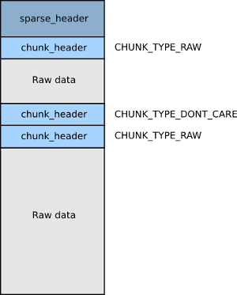

Fastboot flash Sparse Image
分析fastboot命令flash文件原理，理解sparse image原理
lk写入Debug输出调试log
执行fastboot flash lk lk-verified.img时，LK输出log如下：
[25183] [fastboot: command buf]-[getvar:partition-type:lk]-[len=24]
[25184] [fastboot]-[download_base:0x48b00000]-[download_size:0x85e0]
[25185] [Cmd process]-[buf:getvar:partition-type:lk]-[lenBuf:partition-type:lk]
[SEC_USBDL] 0x22, NSC
[25186] [fastboot: command buf]-[getvar:max-download-size]-[len=24]
[25187] [fastboot]-[download_base:0x48b00000]-[download_size:0x85e0]
[25188] [Cmd process]-[buf:getvar:max-download-size]-[lenBuf:max-download-size]
[SEC_USBDL] 0x22, NSC
[25190] [fastboot: command buf]-[download:000d7d5e]-[len=17]
[25191] [fastboot]-[download_base:0x48b00000]-[download_size:0x85e0]
[25192] [Cmd process]-[buf:download:000d7d5e]-[lenBuf:000d7d5e]
[SEC_USBDL] 0x22, NSC
[25212] [fastboot: command buf]-[flash:lk]-[len=8]
[25213] [fastboot]-[download_base:0x48b00000]-[download_size:0xd7d5e]
[25214] [Cmd process]-[buf:flash:lk]-[lenBuf:lk]
[SEC_USBDL] 0x22, NSC
[25215] [PROFILE] mmc read 24 blks in 0 ms: 8KB/s
[25216] singlebootloader bootloader xxxxxxxxxxxxxxxxxxxxxxxxxxx
[25217] [PROFILE] mmc read 24 blks in 0 ms: 8KB/s
[25218] [SEC_POLICY] sboot_state = 0x0
[25218] [SEC_POLICY] lock_state = 0x3
paddr=0x48b00000, saddr=0x48bd7c42, psize=0xd7c42, ssize=0x100, pk_index=0
[25240] [func]cmd_flash_mmc_standard: VerifyImage lk ret = 0
[25241] partid 0, addr 0x15200000, size 0xd7d5e
[25261] [PROFILE] mmc write 1726 blks in 19 ms: 45421KB/s
[25262] [PROFILE] mmc read 1 blks in 0 ms: 8KB/s
[25263] [PROFILE] mmc write 1 blks in 1 ms: 500KB/s
如上log可知，fastboot flash命令，本质上是执行了LK中的fastboot command：
[25183] [fastboot: command buf]-[getvar:partition-type:lk]-[len=24]
[25186] [fastboot: command buf]-[getvar:max-download-size]-[len=24]
[25190] [fastboot: command buf]-[download:000d7d5e]-[len=17]
[25212] [fastboot: command buf]-[flash:lk]-[len=8]
lk getvar
所有的命令都是这么运行的，包括
download、flash命令，调用流程类似；Buffer基地址：0x48B00000
Buffer最大：0x08000000(128MB)
如下是执行时输出的log信息
[25183] [fastboot: command buf]-[getvar:partition-type:lk]-[len=24]
[25184] [fastboot]-[download_base:0x48b00000]-[download_size:0x85e0]
[25185] [Cmd process]-[buf:getvar:partition-type:lk]-[lenBuf:partition-type:lk]
[SEC_USBDL] 0x22, NSC
[25186] [fastboot: command buf]-[getvar:max-download-size]-[len=24]
[25187] [fastboot]-[download_base:0x48b00000]-[download_size:0x85e0]
[25188] [Cmd process]-[buf:getvar:max-download-size]-[lenBuf:max-download-size]
[SEC_USBDL] 0x22, NSC
如下是函数注册及执行关系
* void mt_boot_init(const struct app_descriptor *app)
├── sz = target_get_max_flash_size();
├── fastboot_init(target_get_scratch_address(), sz);
│ ├── target_get_scratch_address()
│ │ └── void *target_get_scratch_address(void)
│ │ └── return ((void *)SCRATCH_ADDR);
│ │ └── SCRATCH_ADDR := 0x48B00000
│ └── int fastboot_init(void *base, unsigned size)
│ ├── download_max = SCRATCH_SIZE;
│ │ └── SCRATCH_SIZE := 0x08000000 # 128MB
│ ├── snprintf(dl_max_str, sizeof(dl_max_str), "0x%X", download_max);
│ ├── fastboot_publish("max-download-size", dl_max_str); --> 主要是通过该函数将数据方如varlist链表中，得后续进行数据查询或者修改
│ │ ├── void fastboot_publish(const char *name, const char *value)
│ │ │ ├── var = malloc(sizeof(*var));
│ │ │ ├── var->value = value;
│ │ │ ├── var->next = varlist;
│ │ │ └── varlist = var;
│ │ └── dl_max_str
│ │ └── SCRATCH_SIZE := 0x08000000 # 128MB
│ ├── udc_register_gadget(&fastboot_gadget)
│ │ └── static struct udc_gadget fastboot_gadget
│ │ └── .notify = fastboot_notify,
│ │ └── event_signal(&usb_online, 0);
│ └── thr = thread_create("fastboot", fastboot_handler, 0, DEFAULT_PRIORITY, DEFAULT_STACK_SIZE);
│ └── static int fastboot_handler(void *arg)
│ └── for (;;)
│ ├── event_wait(&usb_online);
│ └── fastboot_command_loop();
│ └── dprintf(ALWAYS,"fastboot: processing commands\n");
│ ├── r = udc_request_queue(out, req);
│ ├── dprintf(ALWAYS,"[fastboot: command buf]-[%s]-[len=%d]\n", buffer, r);
│ ├── dprintf(ALWAYS,"[fastboot]-[download_base:0x%x]-[download_size:0x%x]\n",(unsigned int)download_base,(unsigned int)download_size);
│ └── for (cmd = cmdlist; cmd; cmd = cmd->next)
│ ├── memcmp(buffer, cmd->prefix, cmd->prefix_len)
│ │ └── 不等于0的忽略，不是当前命令，continue
│ ├── dprintf(ALWAYS,"[Cmd process]-[buf:%s]-[lenBuf:%s]\n", buffer, buffer + cmd->prefix_len);
│ └── cmd->handle((const char*) buffer + cmd->prefix_len, (void*) download_base, download_size); --> 执行注册的处理函数
└── udc_start();
lk download
主要是理解download_base、download_size两个字段是干什么的，前者是下载的时候存储USB传下来的数据，后者是这次传了多少byte数据，为下次执行flash命令做准备；
如下是执行时输出的log信息
[25190] [fastboot: command buf]-[download:000d7d5e]-[len=17]
[25191] [fastboot]-[download_base:0x48b00000]-[download_size:0x85e0]
[25192] [Cmd process]-[buf:download:000d7d5e]-[lenBuf:000d7d5e]
[SEC_USBDL] 0x22, NSC
如下是函数注册及执行关系
* void mt_boot_init(const struct app_descriptor *app)
├── sz = target_get_max_flash_size();
├── fastboot_init(target_get_scratch_address(), sz);
│ ├── fastboot_register("download:", cmd_download, TRUE, FALSE);
│ │ └── void cmd_download(const char *arg, void *data, unsigned sz)
│ │ └── cmd_download_standard(arg, data, sz);
│ │ ├── r = usb_read(download_base, len); ----> 将USB通信的数据搬到内部DRAM的Buffer中
│ │ └── download_size = len; ----> 记录当前次的下载的字节数
│ ├── udc_register_gadget(&fastboot_gadget)
│ │ └── static struct udc_gadget fastboot_gadget
│ │ └── .notify = fastboot_notify,
│ │ └── event_signal(&usb_online, 0);
│ └── thr = thread_create("fastboot", fastboot_handler, 0, DEFAULT_PRIORITY, DEFAULT_STACK_SIZE);
│ └── static int fastboot_handler(void *arg)
│ └── for (;;)
│ ├── event_wait(&usb_online);
│ └── fastboot_command_loop();
│ └── dprintf(ALWAYS,"fastboot: processing commands\n");
│ ├── r = udc_request_queue(out, req);
│ ├── dprintf(ALWAYS,"[fastboot: command buf]-[%s]-[len=%d]\n", buffer, r);
│ ├── dprintf(ALWAYS,"[fastboot]-[download_base:0x%x]-[download_size:0x%x]\n",(unsigned int)download_base,(unsigned int)download_size);
│ └── for (cmd = cmdlist; cmd; cmd = cmd->next)
│ ├── memcmp(buffer, cmd->prefix, cmd->prefix_len)
│ │ └── 不等于0的忽略，不是当前命令，continue
│ ├── dprintf(ALWAYS,"[Cmd process]-[buf:%s]-[lenBuf:%s]\n", buffer, buffer + cmd->prefix_len);
│ └── cmd->handle((const char*) buffer + cmd->prefix_len, (void*) download_base, download_size); --> 执行注册的处理函数
└── udc_start();
如下是download执行的时候处理下载这部分的代码
int usb_read(void *_buf, unsigned len)
{
int r;
unsigned xfer;
unsigned char *buf = _buf;
int count = 0;
if (fastboot_state == STATE_ERROR)
goto oops;
while (len > 0) {
xfer = (len > MAX_USBFS_BULK_SIZE) ? MAX_USBFS_BULK_SIZE : len;
req->buf = buf;
req->length = xfer;
req->complete = req_complete;
r = udc_request_queue(out, req); --> 这里不进入深入分析，如果接收到了数据，会回调`req_complete`从而释放txn_done锁
if (r < 0) {
dprintf(INFO, "usb_read() queue failed\n");
goto oops;
}
event_wait(&txn_done);
if (txn_status < 0) {
dprintf(INFO, "usb_read() transaction failed\n");
goto oops;
}
count += req->length;
buf += req->length;
len -= req->length;
/* short transfer? */
if (req->length != xfer) break;
}
return count;
oops:
fastboot_state = STATE_ERROR;
return -1;
}
lk flash
将上面
download执行USB传入的数据写入对应的eMMC的分区中去；如果要写入的是大于Buffer大小的数据，fastboot会自动分批写入，每次分批写入都不会大于前面所说的128M；
目前Android 大分区采用
Sparse image镜像格式，再写入分区的时候进行合成raw image，主要是因为Sparse image格式节省空间；
* void mt_boot_init(const struct app_descriptor *app)
├── sz = target_get_max_flash_size();
├── fastboot_init(target_get_scratch_address(), sz);
│ ├── fastboot_register("flash:", cmd_flash_mmc, TRUE, TRUE);
│ │ ├── void fastboot_register(const char *prefix, void (*handle)(const char *arg, void *data, unsigned sz), unsigned allowed_when_security_on, unsigned forbidden_when_lock_on)
│ │ │ ├── cmd = malloc(sizeof(*cmd));
│ │ │ └── cmd->handle = handle;
│ │ └── cmd_flash_mmc
│ │ └── void cmd_flash_mmc(const char *arg, void *data, unsigned sz) // data -> SCRATCH_ADDR := 0x48B00000
│ │ └── flash_storage(arg, data, sz); // data -> SCRATCH_ADDR := 0x48B00000
│ │ └── else if (strcmp(arg, "singlebootloader") != 0 && strcmp(arg, "bootloader") != 0) // 根本不存在这样的镜像
│ │ └── result = cmd_flash_mmc_standard(arg, data, sz);
│ │ ├── if (sparse_header->magic != SPARSE_HEADER_MAGIC)
│ │ │ └── result = cmd_flash_mmc_img(arg, data, sz); // 直接写入，这里主要就是写入eMMC了，不进一步分析了
│ │ └── else
│ │ └── result = cmd_flash_mmc_sparse_img(arg, data, sz); // sparse image的镜像，需要单独处理
│ │ ├── if(fill_buf == NULL)
│ │ │ └── fill_buf = special_heap_alloc(FILL_BUF_LEN);
│ │ │ └── void* buf = (void*)(u32)mblock_reserve_ext(&g_boot_arg->mblock_info, length, 0x10000, 0x80000000, 0, "fastboot_heap");
│ │ │ └── 这里输出了很多数据，貌似第0个block的原因
│ │ └── #if (defined(MTK_UFS_SUPPORT) || defined(MTK_NEW_COMBO_EMMC_SUPPORT))
│ │ └── size_wrote = emmc_write(part_id, ptn + ((uint64_t)total_blocks*sparse_header->blk_sz), fill_buf, (u64)todo * sparse_header->blk_sz);
│ ├── udc_register_gadget(&fastboot_gadget)
│ │ └── static struct udc_gadget fastboot_gadget
│ │ └── .notify = fastboot_notify,
│ │ └── event_signal(&usb_online, 0);
│ └── thr = thread_create("fastboot", fastboot_handler, 0, DEFAULT_PRIORITY, DEFAULT_STACK_SIZE);
│ └── static int fastboot_handler(void *arg)
│ └── for (;;)
│ ├── event_wait(&usb_online);
│ └── fastboot_command_loop();
│ └── dprintf(ALWAYS,"fastboot: processing commands\n");
│ ├── r = udc_request_queue(out, req);
│ ├── dprintf(ALWAYS,"[fastboot: command buf]-[%s]-[len=%d]\n", buffer, r);
│ ├── dprintf(ALWAYS,"[fastboot]-[download_base:0x%x]-[download_size:0x%x]\n",(unsigned int)download_base,(unsigned int)download_size);
│ └── for (cmd = cmdlist; cmd; cmd = cmd->next)
│ ├── memcmp(buffer, cmd->prefix, cmd->prefix_len)
│ │ └── 不等于0的忽略，continue
│ ├── dprintf(ALWAYS,"[Cmd process]-[buf:%s]-[lenBuf:%s]\n", buffer, buffer + cmd->prefix_len);
│ └── cmd->handle((const char*) buffer + cmd->prefix_len, (void*) download_base, download_size); --> 执行注册的处理函数
└── udc_start();
super分区写入
参考文档：
sparse image:
一个sparse image文件由一个
sparse_header和许多的chunk构成，每个chunk含一个chunk_header来描述当前chunk，chuck可以没有实体，只有chunk_header；chunk arch
#define SPARSE_HEADER_MAGIC 0xed26ff3a #define CHUNK_TYPE_RAW 0xCAC1 #define CHUNK_TYPE_FILL 0xCAC2 #define CHUNK_TYPE_DONT_CARE 0xCAC3 #define CHUNK_TYPE_CRC 0xCAC4 typedef struct chunk_header { uint16_t chunk_type; /* 0xCAC1 -> raw; 0xCAC2 -> fill; 0xCAC3 -> don't care */ uint16_t reserved1; uint32_t chunk_sz; /* in blocks in output image */ uint32_t total_sz; /* in bytes of chunk input file including chunk header and data */ } chunk_header_t;
chunk_header中的chunk_sz在fastboot烧录的时候并不像上面写的这层意思，而是根据chunk_type的不同，意义不一样：CHUNK_TYPE_RAW:
chunk_sz表示chunk内部block多少；CHUNK_TYPE_FILL: 同上；
CHUNK_TYPE_DONT_CARE:
chunk_sz表示当前标签所在整个镜像的block位置，其一般接CHUNK_TYPE_RAW，是标定，在fastboot分批烧录中，其是都是以其开始，也是以其结束；注意擦除分区的时候填充的是0x00还是0xFF，这个会涉及到这个block默认值是多少的
CHUNK_TYPE_CRC: 一般忽略；
代码参考：
bool cmd_flash_mmc_sparse_img(const char* arg, void* data, unsigned sz)
Android system.img镜像文件一般为sparse ext4 image格式，这里的super分区也是；
第0个
block写入的时候输出信息比较多，暂时不深入分析，跟平台有关系；
fastboot PC写入 super log
执行fastboot flash super super.img，分包处理了，得益于采用的是Sparse image镜像格式。
Sending sparse 'super' 1/13 (131068 KB) OKAY [ 8.402s]
Writing 'super' OKAY [ 2.900s]
Sending sparse 'super' 2/13 (129576 KB) OKAY [ 7.908s]
Writing 'super' OKAY [ 3.752s]
Sending sparse 'super' 3/13 (120468 KB) OKAY [ 7.434s]
Writing 'super' OKAY [ 2.709s]
Sending sparse 'super' 4/13 (115440 KB) OKAY [ 7.316s]
Writing 'super' OKAY [ 2.495s]
Sending sparse 'super' 5/13 (131068 KB) OKAY [ 7.854s]
Writing 'super' OKAY [ 2.820s]
Sending sparse 'super' 6/13 (131071 KB) OKAY [ 7.727s]
Writing 'super' OKAY [ 6.000s]
Sending sparse 'super' 7/13 (131068 KB) OKAY [ 11.177s]
Writing 'super' OKAY [ 2.899s]
Sending sparse 'super' 8/13 (122848 KB) OKAY [ 17.996s]
Writing 'super' OKAY [ 2.694s]
Sending sparse 'super' 9/13 (131068 KB) OKAY [ 14.149s]
Writing 'super' OKAY [ 2.868s]
Sending sparse 'super' 10/13 (125213 KB) OKAY [ 12.106s]
Writing 'super' OKAY [ 3.062s]
Sending sparse 'super' 11/13 (116632 KB) OKAY [ 10.345s]
Writing 'super' OKAY [ 2.594s]
Sending sparse 'super' 12/13 (122080 KB) OKAY [ 12.017s]
Writing 'super' OKAY [ 2.706s]
Sending sparse 'super' 13/13 (92644 KB) OKAY [ 9.217s]
Writing 'super' OKAY [ 2.060s]
Finished. Total time: 175.190s
fastboot super写入debug输出log片段
[422947] [fastboot: command buf]-[download:07fff078]-[len=17] --> 连续的download
[422948] [fastboot]-[download_base:0x48b00000]-[download_size:0x70bc098]
[422948] [Cmd process]-[buf:download:07fff078]-[lenBuf:07fff078]
[SEC_USBDL] 0x22, NSC
[430803] [fastboot: command buf]-[flash:super]-[len=11] --> 开始写入
[430803] [fastboot]-[download_base:0x48b00000]-[download_size:0x7fff078]
[430804] [Cmd process]-[buf:flash:super]-[lenBuf:super]
[SEC_USBDL] 0x22, NSC
[430806] [PROFILE] mmc read 24 blks in 1 ms: 12000KB/s
[430806] singlebootloader bootloader xxxxxxxxxxxxxxxxxxxxxxxxxxx
[430807] [SEC_POLICY] reached the end, use default policy
[430808] [PROFILE] mmc read 24 blks in 0 ms: 8KB/s
[430809] [SEC_POLICY] sboot_state = 0x0
[430809] [SEC_POLICY] lock_state = 0x3
[430810] partition(super) index is 34, ptn is 0x19000000
[430811] Image size span 0x7b8e8000, partition size 0x7b8e8000
[430811] === Sparse Image Header === --> 识别为Sparse Image文件
[430812] magic: 0xed26ff3a
[430812] major_version: 0x1
[430813] minor_version: 0x0
[430813] file_hdr_sz: 28
[430813] chunk_hdr_sz: 12
[430814] blk_sz: 4096
[430814] total_blks: 506088
[430814] total_chunks: 7
[430815] !!Blank: start: 0x0 offset: 0x1e900 --> CHUNK_TYPE_DONT_CARE标签，从中获取offset作为start
[430815] Raw: start block addr: 0x1e900 -->CHUNK_TYPE_RAW
[431231] [PROFILE] mmc write 38824 blks in 415 ms: 46775KB/s
[431231] cmd_flash_mmc_sparse_img 699: CHUNK_TYPE_FILL=0x65830001 size=4096 chunk_data_sz=20480 --> CHUNK_TYPE_FILL 相关的信息
[431236] [PROFILE] mmc write 40 blks in 2 ms: 10000KB/s
[431236] Raw: start block addr: 0x1fbfa -->CHUNK_TYPE_RAW
[431504] [PROFILE] mmc write 24624 blks in 267 ms: 46112KB/s
[431505] cmd_flash_mmc_sparse_img 699: CHUNK_TYPE_FILL=0xffffffff size=4096 chunk_data_sz=8192 --> CHUNK_TYPE_FILL 相关的信息
[431509] [PROFILE] mmc write 16 blks in 1 ms: 8000KB/s
[431509] Raw: start block addr: 0x20802 -->CHUNK_TYPE_RAW
[433621] [PROFILE] mmc write 198688 blks in 2111 ms: 47060KB/s
[433622] !!Blank: start: 0x26906 offset: 0x54fe2 --> CHUNK_TYPE_DONT_CARE标签，结尾start是下次的开始，这里offset暂时不知道干什么用的
[433623] Wrote 506088 blocks, expected to write 506088 blocks